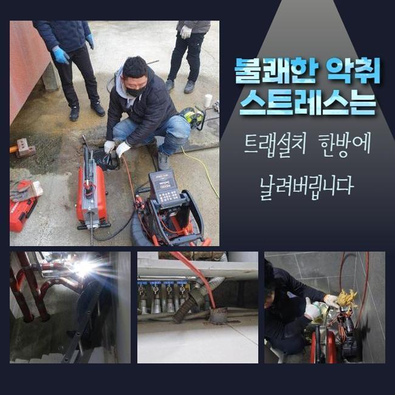
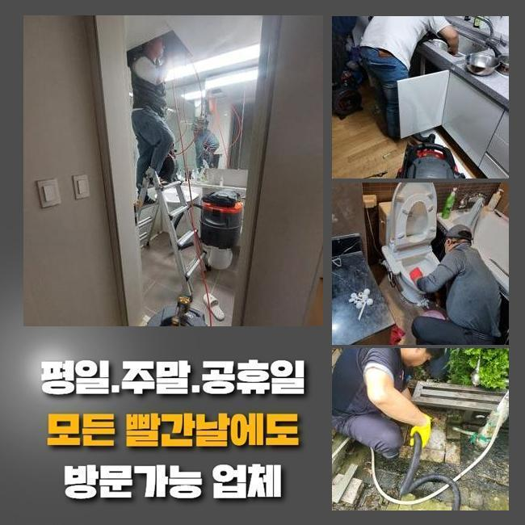
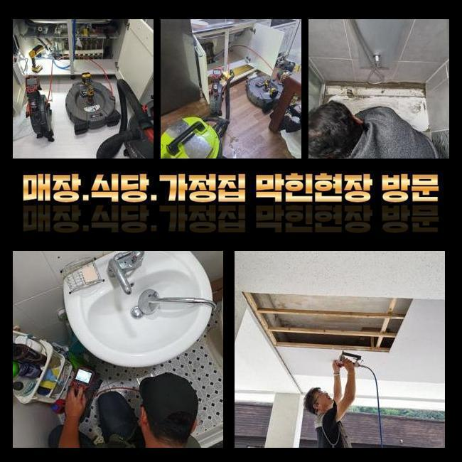
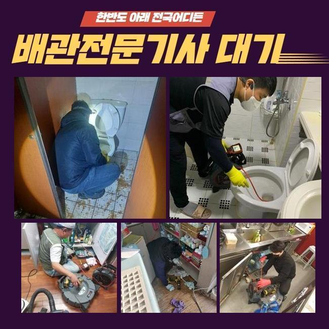
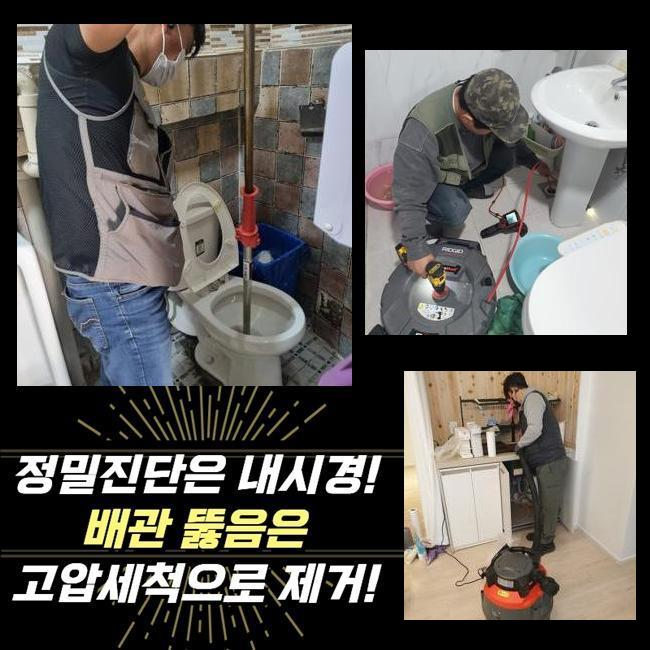
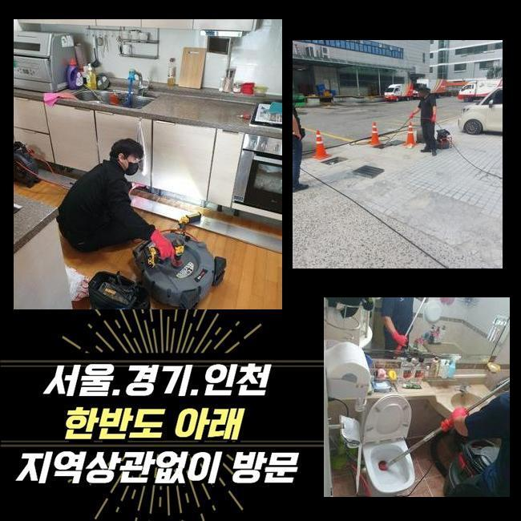
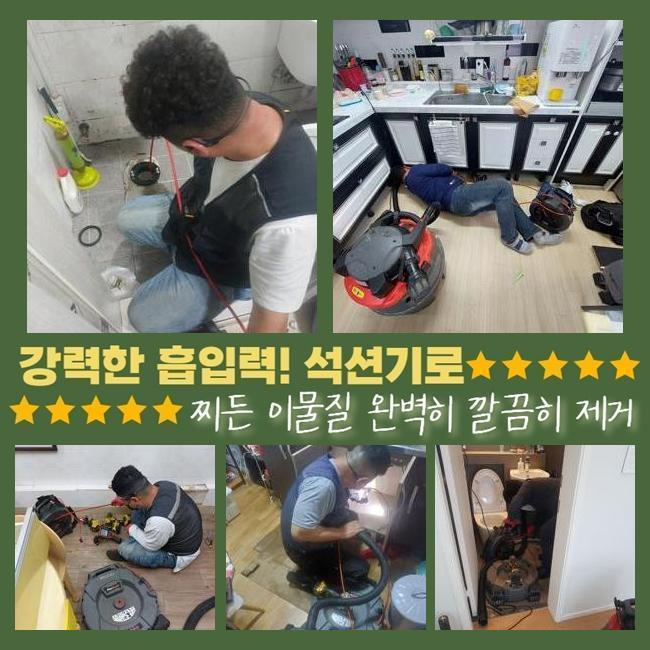

🏠 공주 싱크대하수구막힘 하수도역류 싱크대배관막힘 변기막힐때
용인 싱크대막힘 전문 시공 후기

📋 작업 개요
- 위치: 용인
- 서비스 유형: 싱크대막힘, 변기막힘, 하수구막힘, 배관막힘, 누수수리, 역류해결, 뚫는업체, 배관청소, 고압세척, 배관보수
- 작업 일시: 2025. 1. 6. 22:45
- 업체명: 하수구수사대 (010-5615-2118)
🔍 문제 상황
공주 싱크대하수구막힘 하수도역류 싱크대배관막힘 변기막힐때
하수도에 물이 안 흘러가면 여러가지의 어려움을 당할 수 있습니다
가장 흔한 사건이라 함은 주방 내의 싱크대가 갑작스럽게 찌꺼기가 차서 하수의 이동이 중단되는 상황들도 많고 화장실 안의 양변기나 세탁공간에 물이 차올라서 정상 사용에 문제가 찾아오기도 합니다
공동주택 거주민분으로부터 요청이 들어온다면 개별 배관이 막혔을 것이므로 실내에서 여러 장치를 가동하여 뚫어냅니다
하지만 중앙 배관은 아파트의 경우라면 결함이 없는지 검토하기 위하여 정해진 간격으로 클리닝을 받기 때문에 고장이 나는 일은 비교적 흔치 않아요
영업장이 자리한 빌딩이면 하수관의 곤란이 일어날 확률이 다소 통계적으로 많기는 합니다
이번 포스팅의 주인공은 상가건물 내에 깔린 주 하수관이 막혀 화장실은 물론 내부의 설비를 못쓰게 돼서 얼른 뭐 때문인지 봐달라고 전화를 주신 것이었습니다
자세한 내막을 보니 문제가 됐다고 보이는 메인관로이 있는 지점이 보여서 작업 실행에 옮겼습니다
해당 부위에 탈이 나면 집들에 설치되어 있는 가지관의 문제라고 판단하기 보다는 너비가 넓은 메인관로에 훼손이 이루어졌거나 혹은 쓰레기가 들어차서 통수가 부실하게 되었을 경우가 더욱 우세합니다

🔎 원인 분석
💡 전문가 진단: 정밀 진단 장비를 사용하여 슬러지의 고착 여부를 판명하고 타격/세척 작업을 실시했습니다.
굵은 줄기가 되는 관로부터 통로를 내고 점차 사이즈가 작은 배관까지 처리하게 됩니다
천장 내부에 감춰진 시설물이었기 때문에 아래에 사다리를 배치해서 작업을 실시하기로 계획하고 꽉 막힌 하수도 막힘 해소에 도움을 줄 툴들을 옮겨두고 작동시켰습니다
위쪽만 관통한다고 해도 여전히 안쪽 깊숙이는 제기능이 회복이 안됐으므로 공동배관을 다룰 때는 파이프라인 전체를 속시원히 정화해야 합니다
소재구를 직접 찾아서 장비 들어갈 구멍을 정해서 작업을 할 수 있는 상태로 세팅을 마칩니다
내부 관찰을 돕는 내시경으로 문제되는 파이프 안의 여기저기를 살펴보았습니다
내제된 오물의 양과 이번 고장을 야기했던 대상에 관하여 기기부터 들이대기 전에 판단해야 작업의 노선을 정립할 수 있게 됩니다
메인관로가 다쳤다면 보통은 파이프 규격이 여유롭고 길이도 길어서 소규모의 주거지에 적용하게 되는 소형의 석션으로는 수습이 힘들어요
연결부의 길이가 바닥까지 닿지 않기 때문에 찌꺼기를 모으기엔 집수통이 모자라요
기름 슬러지를 분쇄해서 스케일링하는 기능을 담당해주는 샤프트기 단시간만에 완료되지 않으며 여러 진입로를 열어야 해서 어렵겠다 싶었네요

🔧 작업 과정
상가 속에 있는 하수구 중단이 일어나는 곳이라면 제한이 걸린 구간을 다 치움으로써 기능을 회복시켜야 해요
통쾌한 물살을 쏘면서 접착성 좋은 이물질들이 완전히 제거될 수 있게끔 청소하여 파이프 내부를 걸림돌없이 만들어야 자꾸 막히는 사건들을 처리해 낼 수 있습니다
하수구가 만원사태로 차올랐다면 본격적인 청소작업을 실시하기가 더 복잡해지니 일단은 이물질을 수거하는 스프링기를 써서 제일 꽉 찬 구역을 포커스를 두고 공략해서 물의 흐름을 확보한 다음 완성도 높은 수로 정비를 진행하기로 정했습니다
본장비를 도달시키기 위해 슬러지가 꽉 찬 부분에 틈을 만들고 확장시켜나가서 통로를 조성했습니다
지금 소개하는 상가 건물은 내부에 많은 식당들이 성황리에 운영 중이었고 조리 도중 나온 기름기가 다수 알게 모르게 빠져나가서 하수구 통로에 기름층이 여러 겹 쌓여 있었습니다
온수로 씻어보려고 시도해도 기름은 녹아나지 않으므로 수분기가 마르면 석회물질로 변해서 딱 달라붙게 되는 특성을 띄게 됩니다
적기에 하수구 안의 청소 시공을 수행하지 않고 나몰라라 한다면 가장자리 부근부터 쌓여가면서 입지가 더 넓어져서 흘러나갈 길목이 다 막혀서 배수기능이 전혀 달성되지 않을 것입니다
냄새까지 유발하는 슬러지들을 조속히 없애는 기법은 최신식 고압세척기의 기능 덕택에 간편한 투자로 오물이 정복한 배수관을 맑게 전환해줄 수 있었습니다
지저분하게 접착된 물질이 세찬 물줄기로 인하여 떨어지고 잘게 분해되는 모습을 배관용 카메라를 이용해서 봐가며 상황에 맞게 대처했습니다
움직임이 전혀 없었던 방대한 양의 물질들이 점진적으로 정리되었고 크기가 작은 조각들만 떠다니는 상태로 보였습니다
고압세척의 경우에는 약간의 변동은 있을 수 있지만 오염물질이 자리한 장소들을 모조리 세척을 해주어야만 나중에 다시금 막혀버리는 문제점들이 처리됩니다
오랜기간 머물렀을 기름기를 고압수로 청소한 뒤 시공 전후 계속 사용하는 카메라로 다양한 구간들을 탐색하며 정화가 완료됐나 봐줬습니다
처음 방문했을 때는 말그대로 완전봉쇄 됐다 싶을 정도로 상황이 나빴지만 여러 기능들의 툴을 사용한 업무를 해준 이후에는 모든 유해요소가 사라진 상쾌한 관로를 되찾을 수 있었어요
물이 잘 내려가야하니 수돗물을 폐기해보는 통수검사로써 하수가 유연하게 배출되는 전후 변화를 속시원하게 검사하는 점검과정을 거치고서 잘 뚫렸다고 알려드렸습니다


✅ 작업 완료
아까 장비를 배치하기 위해서 타공을 해줬던 구역들은 기록해뒀다가 보수하는 도구로 꼼꼼하게 덮어서 누수가 발생되지 않게 깔끔하게 관리해 드렸습니다!
이번 현장은 막힘건으로 많은 불편함을 겪고 있던 상가빌딩 중의 매장 안에서 물이 제깍제깍 내려가지 못하고 주방 쪽의 물 범람까지 빚어졌던 상황을 바로잡고서 작업을 마감할 수 있었습니다!
사이즈가 남다른 배수로라면 간단하게서 해결해버리기는 곤란한 문제인 만큼 섣부르게 무대포로 작업한다가 파이프에 손상이 가는 상황들도 꽤 됩니다
주거시설을 포함해서 규모가 큰 상가라도 하수관에 대한 이해를 바탕으로 말끔히 손봐드리고 있사오니 개선을 해보셨으면 좋겠습니다




⚠️ 베란다 누수 및 방수 관리 방법
- ✅ 비가 많이 올 때 창틀 주변이나 아래층 천장에 얼룩이 생기는지 정기적으로 확인해 보세요.
- ✅ 우수관 주변 실리콘 마감이 들뜨거나 깨진 틈새가 있는지 손상 여부를 수시로 체크하세요.
- ✅ 베란다 바닥 타일의 줄눈(메지)이 소실되면 그 틈으로 물이 침투하여 누수가 유발됩니다.
- ✅ 누수 의심 증상 발견 시 방치하면 아래층 손실이 커지므로 즉시 전문가의 진단을 받으십시오.
💡 핵심 정리
- 확실한 장비 작업(내시경 점검 및 샤프트 스케일링)으로 원인을 뿌리 뽑습니다.
- 작업 후 1년 이내에 동일한 부위 재발 시 100% 무상 A/S 서비스를 보장합니다.
- 서울 · 경기 · 인천 전 지역에 24시간 언제든 긴급 출동할 수 있도록 항시 대기 중입니다.
❓ 자주 묻는 질문 (FAQ)
🚨 용인 싱크대막힘 문제로 고민이신가요?
정확한 원인 진단과 확실한 시공으로 재발 없는 해결을 약속드립니다.
24시간 긴급 출동 | 서울 · 경기 · 인천 전지역 | 1년 내 재발 시 무상 A/S